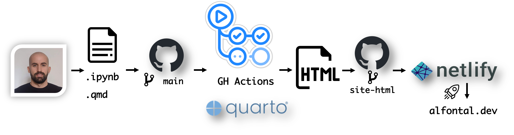

Introduction
Welcome to my blog!
I am writing this post to introduce both the blog and the site, which I have recently created. I have been thinking about creating a blog for a while, but I never really got around to it. I have been working on this site for a while, and I think that it is finally ready to be published. I am not sure if I will be able to keep up with the blog, but I will try my best.
The blog
The main topics of this blog will be research, data science, programming and anything else that catches my attention. I have a wide range of interests, so I might go off on a tangent sometimes, but I will try to keep the data science and programming topics relevant to the other ones.
The site
The reason I decided to create this website was to showcase my blog and my portfolio, as I am finishing my PhD and I want to make a good impression on potential employers and colleagues. I also want to demonstrate my skills and experience in my field and have some fun with web development.
Background on reporting via static pages
I have been playing around with technical reporting for a good while now, since I started to need to share my data analysis reports with other (technical and non-technical) folks.
Most of the times my reports are done via Jupyter notebooks, but I have never liked the default renders that both Github and Gitlab provide, as I feel the lack of proper navigation tools and the ability to show rich outputs and hide code cells really hinders the readability of the notebooks and directly scares away non-technical readers. Because of this, I started to look for static-page generators that could render my notebooks into nicely formatted html pages that I could customize to my liking.
(1) Pelican and Gitlab Pages
The first static page generator I tried was pelican, which offers a variety of site themes using Jinja2 templates and can render notebooks by using the pelican-jupyter plugin.
At this point in time we were using a self-hosted Gitlab server in my old company, so we used Gitlab Pages and its integrated CI/CD (Github Actions did not exist yet and people were still using Travis CI to handle CI/CD on Github). I didn’t really fully understand the magic behind Gitlab’s CI/CD at that point and I was a bit scared of messing up the configuration by modifying too much the .gitlab-ci.yml file at that point, so I mantained this setup for a while, even after leaving the company. The fact that Gitlab offered free private repositories (unlike Github at that point) was also a factor in my decision to use Gitlab as my main git hosting service.
(2) Jupyterbook
After a while, I discovered the Jupyterbook project. I saw several projects using it and I was really impressed by the results.
Some really cool projects I found using Jupyterbook are:
I decided to give it a try and moved all my reporting to Jupyterbook, which seemed to perfectly integrate with my .ipynb reports. With the introduction of free private repositories on Github and the introduction of Github Actions, I started to migrate most of my projects to Github, using Github Pages to host the site.
A problem with the free hosting by Github Pages is that while the repositories might be private, the sites are not, so anyone with the link can access the site. This is not a problem for some of my projects, but it is for some others, where I need to be sure that there is some kind of Authentication in place to be able to access my reports. It’s because of that that for a good while I mixed both Gitlab and Github for my projects.
As far as I know, Github now supports private sites hosted in Github Pages but only for Enterprise accounts, which is not an option for me at this point.
(3) Quarto and Netlify
As mainly a Python developer but also a R user, I was always a bit jealous of the R community and the whole ecosystem around Rmarkdown and projects such as bookdown. The beautiful sites that people were able to create with bookdown were really impressive and I always wanted to be able to do something similar with Python.
It was then a happy surprise when I discovered that the RStudio project had rebranded itself as Posit, and part of the change is the will to embrace other languages and ecosystems, mainly the Python community. I was really excited to see that they were working on a new project called Quarto, which is a new static site generator that can render notebooks and markdown files into beautiful html pages. This solution seemed to be the perfect fit for my needs, as it would allow me to use the same .ipynb files I was already using for my Jupyterbook reports, but with the added benefit of being able to collaborate with colleagues using Rmarkdown files interchangeably! On top of that, having a big team behind the project and the fact that it is backed by a big company such as RStudio made me feel more confident about the future of the project.
I migrated all my project rendering to Quarto and started to tinker and explore its features. I was really happy with the results, and learnt a lot about HTML, CSS and even Javascript in the process.
I also ended up reworking the old Wordpress Site of my consortium HELICAL ITN, into a Quarto site (which you can visit in helical-itn.eu).
After that, I also started to explore the web hosting options available by Netlify, which seemed to be a really good fit for my needs. While Github Pages is easy and works, the customization options are quite limited and I was not able to find a way to add any kind of authentication to my site. Netlify, on the other hand, offers a lot of customization on this regard and it is really easy to set up and use.
Current Workflow
With all that unnecessary background information out of the way, I can finally get to the point of my post and my current workflow for the site (and most of my reporting projects):

Basically, what I do is:
- Edit my reports or sites on either
.ipynbor.qmdformat. I can pre-render the results locally usingquarto render - When I am happy with the results I push to the
mainbranch in Github. - This triggers the
Github Actionsworkflow that builds the environment, installs the dependencies (usingpoetryand caching them for re-runs) and then usesquartoto render the HTML pages. - The rendered pages are then commited to a separate branch in the same repo,
site-html. - I configure Netlify to deploy the
site-htmlbranch to the site, so when the branch is updated, Netlify will automatically deploy the new version of the site on the custom domain I have configured and with the access restrictions I have set up.
I am pretty happy with this workflow, as it allows me to have a single source of truth for my reports and sites, while still being able to use the tools I am most comfortable with. We’ll see how long this lasts.
Conclusion
That is all for now. I have several other posts in mind, but I’ll leave them for another day.